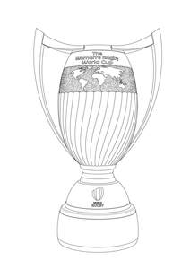

Trade Mark Journal No.2025/022 30 May 2025
UK00004200643 8 May 2025 (9,14,16,18,25,28,35,38,39,41,43)

- Class 9
- Scientific, nautical, surveying, photographic, cinematographic, optical, weighing, measuring, signalling, checking (supervision), life-saving and teaching apparatus and instruments; apparatus and instruments for conducting, switching, transforming, accumulating, regulating or controlling electricity; apparatus for recording, transmission or reproduction of sound or images; magnetic data carriers, recording discs; mechanisms for coin operated apparatus; calculating machines, data processing equipment and computers; fire-extinguishing apparatus; magnetic and magnetically encoded cards; programmable cards; smart cards; cards for bearing data; credit, charge, debit and/or cash cards; prepayment cards; cheque guarantee cards; apparatus for data processing; apparatus for processing card transactions and data relating thereto and for payment processing; cash registers; apparatus for verifying data on magnetically encoded cards; sound and/or video recordings; tapes; cassettes; compact discs; films; slides; video recorders; video cassettes; video discs; DVDs; computer games; video games; computer software; Computer game software for use on mobile and cellular phones; Downloadable graphics for mobile phones; Application software for mobile phones; Computer game software for computers, mobile phones and tablet computers; software for tablet computers; computer hardware; computer peripherals; mouse mats; screensavers; publications in electronic format; data processing apparatus; electric and electronic scoreboards; photographic and cinematographic apparatus and instruments; time recording devices; cameras; camcorders; Cases especially made for photographic apparatus and instruments; telecommunications apparatus, equipment and accessories; broadcasting apparatus and instruments; telephones; mobile phones; mobile phone accessories; cases and covers for mobile phones; cases and covers for computer tablets; cases and covers for computer hardware; headphones; earphones; sunglasses; sunglass cases; sunglass frames; eyeglasses; eyeglass cases; eyeglass frames; eyeglasses for sports; goggles; protective clothing and protective footwear; magnets; portable battery chargers; downloadable graphics; downloadable multimedia content; downloadable images, pictures, photographs, artwork and animated cartoons; downloadable videos and films; downloadable music; downloadable audio; downloadable electronic publications; downloadable multimedia, image, video, music and audio files; downloadable digital files and multimedia, image, video, music and audio files authenticated by non-fungible tokens; security tokens [encryption devices]; downloadable digital media, namely, digital trading cards and digital art; downloadable software for processing digital files, digital art, media, videos, photography, music, data, statistics, graphics, or visual effects; multimedia, image, video, music and audio files authenticated by non-fungible tokens (NFTs); software for non-fungible token (NFT) ticketing; software for creating non-fungible tokens (NFTs); software for creating, viewing, editing, modifying, purchasing, selling and transferring non-fungible tokens (NFTs), multimedia content, images, pictures, photographs, artwork, animated cartoons, video, music and audio; Downloadable software for enabling users to view, market, purchase, sell, or exchange non-fungible tokens (NFTs) or digital goods; marketplace software; software for the buying and selling of goods and services; Downloadable software and mobile application software providing a virtual marketplace; financial software and payment processing software; cryptocurrency software; blockchain software; cryptocurrency and virtual currency wallets; Downloadable software for use as a mobile and electronic wallet; software in the field of digital assets; software for facilitating blockchain-based financial transactions using cryptocurrency; software to facilitate the use of a block chain or distributed ledger; software enabling users to compile, store, transmit, receive, trade and exchange virtual currencies, cryptocurrencies, non-fungible tokens (NFTs) and other digital assets; downloadable software for use in electronically trading and settlement, storing, sending, receiving, accepting, and transmitting digital assets, cryptocurrency, and non-fungible tokens (NFTs); computer software for digital currency, electronically stored currency, tokens of value, utility tokens, securities, shares, units of equity and tokens providing an entitlement to any of the foregoing, along with any digital representations of value or negotiable instruments; downloadable cryptographic keys for receiving and spending cryptocurrency; computer programs for blockchain data storage; computer software for the purchase and sale of rights to digital visual images; Virtual reality software; Virtual, augmented, and mixed reality software for use in enabling computers and mobile devices to provide virtual reality experiences; software for enabling users to experience virtual reality and augmented reality visualization, manipulation, and immersion; virtual reality game software; software for engaging in social networking and interacting with online communities; social networking software; software for accessing and streaming multimedia entertainment content; software for providing access to an online virtual environment; software for the creation, production, modification and purchase of digital animated and non-animated designs and characters, avatars, digital overlays and skins for access and use in online environments, virtual online environments, and extended reality virtual environments; software for generation virtual images, videos and environments; Downloadable virtual goods, namely, computer programs featuring footwear, clothing, headwear, sportswear, rugby shirts, eyewear, bags, sports bags, backpacks, sports equipment, rugby balls, art, toys, for use online and in online virtual worlds; Downloadable virtual goods, namely, computer programs featuring perfumery, cosmetics, toiletries, cosmetic preparations, laundry detergent and fabric conditioners, badges, vehicle badges, buckles, busts, figurines, key rings, memorial plates and plaques, ornaments, monuments, signs, number plates, statues and statuettes, works of art, automatic vending machines for use online and in online virtual worlds; Downloadable virtual goods, namely, computer programs featuring vehicles, jewellery, Bracelets, Clocks and watches, Earrings, Necklaces, Ornamental pins, Ornaments [jewellery], Pins [jewellery], Tie pins, Wristwatches, wrist bands, team and player trading pins (jewellery), pin badges, trophies for use online and in online virtual worlds; Downloadable virtual goods, namely, computer programs featuring photographs, stationery, artists' materials, posters, flags, banners, trading cards, newspapers, books, magazines, albums, stickers, greeting cards, calendars, diaries, postcards, collectible cards, souvenir programs for sports events for use online and in online virtual worlds; Downloadable virtual goods, namely, computer programs featuring bags, umbrellas, purses, handbags, boot bags, holdalls, suitcases, rucksacks, backpacks, sporting bags, wallets, furniture, pillows and cushions, mugs, cups, flags, towels, pennants, Clothing, footwear, headgear, rugby boots, sportswear, rugby shirts, replica rugby kits, rugby bibs, wrist bands, carpets, rugs, mats and matting, wallpaper for use online and in online virtual worlds; Downloadable virtual goods, namely, computer programs featuring games and playthings, gymnastic and sporting articles, toys, rugby balls, balls, bags adapted for carrying sporting articles and apparatus, goal posts, goal nets, sports training apparatus, shin pads, rugby gloves, miniature replica rugby kits, balloons, playing cards, teddy bears, puzzles for use online and in online virtual worlds; Computer software for blockchain technology; Computer software in the field of NFTs, virtual environments, virtual goods; computer software for authoring, downloading, transmitting, receiving, editing, extracting, encoding, decoding, displaying, storing and organizing text, graphics, images, pictures, photographs, artwork, animated cartoons, videos, music, audio and electronic publications; downloadable multimedia files containing artwork, images, text, audio, video, games, and internet web links relating to sports, rugby, non-fungible tokens, finance, cryptocurrency, digital assets, virtual environments and virtual goods; Downloadable software for browsing and accessing digital content, computer software, and computer games; downloadable digital trading cards and digital stickers; virtual reality software for allowing viewers to watch rugby matches and sports events in a virtual stadium; near field communication tags for interacting with mobile applications; parts and fittings for all the aforesaid goods.
- Class 14
- Precious metals and their alloys; Jewellery, precious stones; Horological and chronometric instruments; Alarm clocks; Alloys of precious metal; Amulets; Atomic clocks; Badges of precious metal; Beads for making jewellery; Boxes of precious metal; Bracelets; Brooches; Busts of precious metal; Cases for clock- and watchmaking; Cases for watches [presentation]; Chains [jewellery]; Charms [jewellery]; Chronographs [watches]; Chronometers; Chronometrical instruments; Chronoscopes; Clock cases; Clocks; Clocks and watches, electric; Clockworks; Coins; Copper tokens; Cuff links; Diamonds; Earrings; Gold thread [jewellery]; Gold, unwrought or beaten; Hat ornaments of precious metal; Ingots of precious metals; Iridium; Jewellery; Jewellery cases [caskets]; Jewellery of yellow amber; Key rings [trinkets or fobs]; Lockets [jewellery]; Master clocks; Medals; Necklaces [jewellery]; Ornamental pins; Ornaments [jewellery]; Pearls [jewellery]; Pins [jewellery]; Precious metals, unwrought or semi-wrought; Precious stones; Rings [jewellery]; Semi-precious stones; Shoe ornaments of precious metal; Silver thread; Silver, unwrought or beaten; Spun silver [silver wire]; Statues of precious metal; Statuettes of precious metal; Stopwatches; Sundials; Tie clips; Tie pins; Watch bands; Watch cases; Watch chains; Watch glasses; Watch springs; Watches; Wire of precious metal [jewellery]; Works of art of precious metal; Wristwatches; wrist bands; team and player trading pins (jewellery); pin badges; trophies of precious metals; badges; parts and fittings for all the aforesaid goods.
- Class 16
- Printed matter; book binding material; photographs; stationery; adhesives for stationery or household purposes; artists' materials; paint brushes; typewriters and office requisites (except furniture); instructional and teaching material (except apparatus); plastic materials for packaging (not included in other classes); printers' type; printing blocks; travellers cheques; cardboard and plastic cards; cheques; booklets; posters; bookmarks; flags, banners; paper; cardboard; note-paper transfers; decalcomanias; labels; wrapping and packaging materials; trading cards; periodical publications; newspapers; books; magazines; albums; pens, pencils, rulers, pencil cases, writing paper; car tax disc holders; stickers; vehicle stickers; writing and drawing instruments; greeting cards; instructional and teaching material; calendars; diaries; address books; folders; files; writing instruments of precious metal; cheque book holders; paper coasters; coasters of cardboard; printed publications; journals; brochures; leaflets; catalogues; manuals; programmes; directories; annuals; prospectuses; temporary tattoos; note pads; paper pennants; postcards; printed tickets to sports games and events; collectible cards; collectible cards and memorabilia holders; souvenir programs for sports events; passport cases. .
- Class 18
- Leather and imitations of leather; Animal skins, hides; trunks and travelling bags; umbrellas, parasols and walking sticks; whips, harness and saddlery; keycases; purses; bags; handbags, boot bags; holdalls; luggage; suitcases; rucksacks; backpacks; sporting bags; wallets; credit card holders; briefcases; card cases; luggage label holders; belts; collars for pets; luggage straps and luggage tags made of leather; school bags; document cases.
- Class 25
- Clothing; footwear; headgear; rugby boots; sportswear; rugby shirts; replica rugby kits, namely, rugby jerseys, rugby shorts and rugby boots; gloves; scarves; belts [clothing]. .
- Class 28
- Games and playthings; gymnastic and sporting articles; toys; board games; hand-held, self-contained games apparatus; computer game apparatus; footballs; rugby balls; balls; bags adapted for carrying sporting articles and apparatus; rugby goal posts; nets for sports; reduced sized rugby goal posts; sports training apparatus; hurdles for use in athletics training; blocking dummies; protective padding for sports; tackle bags for use in training for the game of rugby; apparatus for use in training for the game of rugby [sporting equipment]; shin pads; gloves for rugby [sporting equipment]; darts and flights therefor, balloons; coin/counter operated games; ordinary playing cards; games adapted for use with television receivers; models being toys; plastic models being toys; teddy bears; stuffed toy bears; puzzles; Soap bubbles [toys]; bubble making wand and solution sets; poker chips; indoor football tables; decorations for Christmas trees; sponge hands in the nature of novelties; rattles; articles for playing golf; golf balls; golf tees; golf ball markers; golf bags; golf club covers; golf gloves; articles for playing darts; exercise apparatus; fishing tackle; soft toys; inflatable toys; toy models kit; party novelties; party novelty hats; toy and novelty face masks; costumes being children's playthings; parts and fittings for all of the aforesaid goods.
- Class 35
- Advertising; Business management; Business administration; Office functions; Accounting; Accounts (Drawing up of statements of -); Administrative processing of purchase orders; Advertising by mail order; Arranging newspaper subscriptions for others; Arranging subscriptions to telecommunication services for others; Auctioneering; Auditing; Bill-posting; Business appraisals; Business consultancy (Professional -); Business information; Business inquiries; Business investigations; Business management and organization consultancy; Business management assistance; Business management consultancy; Business management of hotels; Business management of performing artists; Business management of sports people; Business organization consultancy; Business research; Commercial administration of the licensing of the goods and services of others; Commercial information agencies; Commercial information and advice for consumers [consumer advice shop]; Commercial or industrial management assistance; Compilation of information into computer databases; Compilation of statistics; Cost price analysis; Data search in computer files for others; Demonstration of goods; Direct mail advertising; Dissemination of advertising matter; Distribution of samples; Document reproduction; Economic forecasting; Efficiency experts; Employment agencies; Fashion shows for promotional purposes (Organization of -); File management (Computerized -); Import-export agencies; Invoicing; Layout services for advertising purposes; Management (Advisory services for business -); Marketing; Marketing research; Marketing studies; Modelling for advertising or sales promotion; News clipping services; Office machines and equipment rental; On-line advertising on a computer network; Opinion polling; Organization of exhibitions for commercial or advertising purposes; Organization of trade fairs for commercial or advertising purposes; Outsourcing services [business assistance]; Payroll preparation; Personnel management consultancy; Personnel recruitment; Photocopying services; Presentation of goods on communication media, for retail purposes; presentation of virtual goods, digital assets and non-fungible tokens (NFTs) on communication media, for retail purposes; Price comparison services; Procurement services for others [purchasing goods and services for other businesses]; Production of advertising films; promotional services; Psychological testing for the selection of personnel; Public relations; Publication of publicity texts; Publicity; Publicity agencies; Publicity columns preparation; Publicity material rental; Radio advertising; Relocation services for businesses; Rental of advertising space; Rental of advertising time on communication media; Rental of photocopying machines; Rental of vending machines; Sales promotion for others; Secretarial services; Shop window dressing; Shorthand; Sponsorship search; Systemization of information into computer databases; Tax preparation; Telemarketing services; Telephone answering for unavailable subscribers; Television advertising; Transcription; Typing; Updating of advertising material; Word processing; Writing of publicity texts; Advertising and marketing; advertising services; business data analysis; online advertising and marketing services; business networking; business monitoring and consulting services, namely, tracking users and advertising of others to provide strategy, insight, marketing guidance, and for analysing, understanding and predicting consumer behaviour and motivations, and market trends; placing advertisements and promotional displays in electronic sites accessed via computer networks; providing information regarding careers, employment, and job placement; providing market information in relation to consumer products; providing shopping information; compiling and maintaining online directories; providing information regarding organising and conducting volunteer programmes and community service projects; computerized file management; sales promotion (for others); computer data recording services; business information services; providing business information over the internet; Retail services connected to the sale of chemicals used in industry, science and photography, as well as in agriculture, horticulture and forestry, unprocessed artificial resins, unprocessed plastics, manures, fire extinguishing compositions, tempering and soldering preparations, chemical substances for preserving foodstuffs, tanning substances, adhesives used in industry; Retail services connected to the sale of unprocessed plastics in the form of liquids, chips or granules, paints, varnishes, lacquers, preservatives against rust and against deterioration of wood, colorants, mordants, raw natural resins, metals in foil and powder form for painters, decorators, printers and artists; Retail services connected to the sale of bleaching preparations and other substances for laundry use, cleaning, polishing, scouring and abrasive preparations, soaps, perfumery, essential oils, cosmetics, hair lotions, dentifrices, deodorants, perfumes, toiletries, creams, gels, lotions, foams, soaps, talcum powder, shampoos, conditioners, sprays, body paint, antiperspirants, body and facial scrubs, breath fresheners; Retail services connected to the sale of pre-shave and aftershave preparations, shaving preparations, cosmetic preparations, laundry detergent and fabric conditioners, vegetable dye skin transfers, boot cream and polish, car cleaning preparations, cushions filled with fragrant or perfumed substances, room fragrancing products; Retail services connected to the sale of industrial oils and greases, lubricants, dust absorbing preparations, wetting and binding compositions, fuels and illuminants, candles and wicks for lighting, combustible fuels and scented candles; Retail services connected to the sale of pharmaceutical and veterinary preparations, sanitary preparations for medical purposes, dietetic food and substances adapted for medical or veterinary use, food for babies, dietary supplements for humans and animals, plasters, materials for dressings, material for stopping teeth, dental wax, disinfectants, preparations for destroying vermin, fungicides, herbicides; Retail services connected to the sale of badges made of common metals and their alloys, vehicle badges, buckles, busts, figurines, hooks, key rings, keys, memorial plates and plaques, ornaments, monuments, signs, number plates, statues and statuettes, ferrules for walking sticks, works or art, all made wholly or principally of metal, bronzes; Retail services connected to the sale of common metals and their alloys, metal building materials, transportable buildings of metal, materials of metal for railway tracks, non-electric cables and wires of common metal, ironmongery, small items of metal hardware, pipes and tubes of metal, safes, ores, trophies of common metal; Retail services connected to the sale of machines, namely coffee machines and food processing machines, machine tools, motors and engines (except for land vehicles), machine coupling and transmission components (except for land vehicles), agricultural implements other than hand-operated, incubators for eggs, automatic vending machines; Retail services connected to the sale of hand tools and hand operated implements, cutlery, side arms, razors, electric razors and hair cutters; Retail services connected to the sale of scientific, nautical, surveying, photographic, cinematographic, optical, weighing, measuring, signalling, checking (supervision), life-saving and teaching apparatus and instruments, apparatus and instruments for conducting, switching, transforming, accumulating, regulating or controlling electricity, apparatus for recording, transmission or reproduction of sound or images, magnetic data carriers, recording discs, mechanisms for coin operated apparatus; Retail services connected to the sale of calculating machines, data processing equipment and computers, fire-extinguishing apparatus, apparatus for data processing, apparatus for processing card transactions and data relating thereto and for payment processing, cash registers; Retail services connected to the sale of apparatus for verifying data on magnetically encoded cards, sound and/or video recordings, tapes, cassettes, compact discs, films, slides, video recorders, video cassettes, video discs, DVDs, computer games, video games, computer software, Computer game software for use on mobile and cellular phones, Downloadable graphics for mobile phones, Application software for mobile phones, Computer game software for computers, mobile phones and tablet computers; Retail services connected to the sale of software for tablet computers, computer hardware, computer peripherals, mouse mats, screensavers, publications in electronic format, data processing apparatus, electric and electronic scoreboards, photographic and cinematographic apparatus and instruments, time recording devices, cameras, camcorders, Cases especially made for photographic apparatus and instruments, telecommunications apparatus, equipment and accessories; Retail services connected to the sale of broadcasting apparatus and instruments, telephones, mobile phones, mobile phone accessories, cases and covers for mobile phones, cases and covers for computer tablets, cases and covers for computer hardware, sunglasses, sunglass cases, sunglass frames, eyeglasses, eyeglass cases, eyeglass frames, eyeglasses for sports, goggles, protective clothing and protective footwear, magnets, fridge magnets, decorative magnets, USB flash drives; Retail services connected to the sale of surgical, medical, dental and veterinary apparatus and instruments, artificial limbs, eyes and teeth, orthopaedic articles, suture materials, massage apparatus, supportive bandages, furniture adapted for medical use; Retail services connected to the sale of apparatus for lighting, heating, steam generating, cooking, refrigerating, drying, ventilating, water supply and sanitary purposes, air conditioning apparatus, electric kettles, gas and electric cookers, vehicle lights and vehicle air conditioning units; Retail services connected to the sale of vehicles, apparatus for locomotion by land, air or water, wheelchairs, motors and engines for land vehicles, vehicle body parts and transmissions; Retail services connected to the sale of firearms, ammunition and projectiles, explosives, fireworks; Retail services connected to the sale of precious metals and their alloys, Jewellery, precious stones, Horological and chronometric instruments, Alarm clocks, Alloys of precious metal, Amulets, Atomic clocks, Badges of precious metal, Beads for making jewellery, Boxes of precious metal, Bracelets, Brooches, Busts of precious metal, Cases for clock- and watchmaking, Cases for watches [presentation], Chains [jewellery], Charms [jewellery], Chronographs [watches]; Retail services connected to the sale of chronometers, Chronometrical instruments, Chronoscopes, Clock cases, Clocks, Clocks and watches, electric, Clockworks, Coins, Copper tokens, Cuff links, Diamonds, Earrings, Gold thread [jewellery], Gold, unwrought or beaten, Hat ornaments of precious metal, Ingots of precious metals, Iridium, Jewellery, Jewellery cases [caskets], Jewellery of yellow amber, Key rings [trinkets or fobs], Lockets [jewellery], Master clocks, Medals; Retail services connected to the sale of Necklaces [jewellery], Ornamental pins, Ornaments [jewellery], Pearls [jewellery], Pins [jewellery], Precious metals, unwrought or semi-wrought, Precious stones, Rings [jewellery], Semi-precious stones, Shoe ornaments of precious metal, Silver thread, Silver, unwrought or beaten, Spun silver [silver wire], Statues of precious metal, Statuettes of precious metal, Stopwatches, Sundials, Tie clips, Tie pins; Retail services connected to the sale of Watch bands, Watch cases, Watch chains, Watch glasses, Watch springs, Watches, Wire of precious metal [jewellery], Works of art of precious metal, Wristwatches, wrist bands, team and player trading pins (jewellery), pin badges, trophies of precious metals, headphones, parts and fittings for all the aforesaid goods, trophies of precious metals; Retail services connected to the sale of musical instruments, stands and cases adapted for musical instruments; Retail services connected to the sale of printed matter, book binding material, photographs, stationery, adhesives for stationery or household purposes, artists' materials, paint brushes, typewriters and office requisites (except furniture), instructional and teaching material (except apparatus), plastic materials for packaging, printers' type, printing blocks, travellers cheques, cardboard and plastic cards, cheques, booklets, posters, bookmarks, flags, banners; Retail services connected to the sale of paper, cardboard, note-paper transfers, decalcomanias, labels, wrapping and packaging materials, trading cards, periodical publications, newspapers, books, magazines, albums, pens, pencils, rulers, pencil cases, writing paper, car tax disc holders, stickers, vehicle stickers, writing and drawing instruments, greeting cards, instructional and teaching material, calendars, diaries, address books, folders, files, writing instruments of precious metal; Retail services connected to the sale of cheque book holders, paper coasters, coasters of cardboard, printed publications, journals, brochures, leaflets, catalogues, circulars, manuals, programmes, directories, annuals, prospectuses, temporary tattoos, note pads, paper pennants, postcards, collectible cards, collectible cards and memorabilia holders, souvenir programs for sports events; Retail services connected to the sale of plastic materials for packaging, printers' type, printing blocks, rubber, gutta-percha, gum, asbestos, mica, plastics in extruded form for use in manufacture, semi-finished plastics materials for use in further manufacture, stopping and insulating materials, flexible non-metallic pipes; Retail services connected to the sale of Leather and imitations of leather, Animal skins, hides, trunks and travelling bags, umbrellas, parasols and walking sticks, whips, harness and saddlery, keycases, purses, bags, handbags, boot bags, holdalls, luggage, suitcases, rucksacks, backpacks, sporting bags; Retail services connected to the sale of wallets, credit card holders, briefcases, card cases, luggage label holders, belts, strips, collars for pets, luggage straps and luggage tags made of leather, school bags, document cases, passport cases; Retail services connected to the sale of non-metallic building materials, non-metallic rigid pipes for building, asphalt, pitch and bitumen, non-metallic transportable buildings, non-metallic monuments, non-metallic framed conservatories; Retail services connected to the sale of doors and windows, furniture, mirrors, picture frames, wood, cork, reed, cane, wicker, horn, bone, ivory, whalebone, shell, amber, mother-of-pearl, meerschaum and plastic, garden furniture, pillows and cushions; Retail services connected to the sale of household or kitchen utensils and containers, combs and sponges, brushes, brush-making materials, articles for cleaning purposes, steel wool, articles made of ceramics, glass, porcelain or earthenware, electric and non-electric toothbrushes, scale models [ornaments] of plastic and wood, coasters (tableware), mugs, ceramic mugs, porcelain mugs, cups and mugs, bottle openers, drinking bottles for sport; Retail services connected to the sale of ropes, string, nets, tents, awnings, tarpaulins, sails, sacks for transporting bulk materials, padding and stuffing materials which are not made of rubber or plastics, raw fibrous textile materials; Retail services connected to the sale of yarns and threads for textile use; Retail services connected to the sale of Textiles, flags, not made of paper, bath linen, bed covers, curtains of textile or plastic, sleeping bag sheet liners, bean bag covers, fabric for use in the manufacture of bags, fibre fabrics for use in the manufacture of bags, quilt bags, handkerchiefs, tea towels, textile wall hangings, bar towels, towels, pennants, napkins and tablecloths, badges made of fabric material; Retail services connected to the sale of Clothing, footwear, headgear, rugby boots, sportswear, rugby shirts, replica rugby kits, rugby bibs, wrist bands; Retail services connected to the sale of lace and embroidery, ribbons and braid, hooks and eyes, pins and needles, artificial flowers, badges, cloth badges, other badges not of precious metal or cloth, rosettes, ornamental novelty badges, buttons, braids, tassels, brooches for clothing; Retail services connected to the sale of decorative pins and badges not made of precious metal, hair bands, hair pins, pins of non-precious metal, cords for clothing (straps), buckles of precious metal, pin cases, badges for wear, embroidered badges; Retail services connected to the sale of carpets, rugs, mats and matting, linoleum and other materials for covering existing floors, wall hangings (non-textile), wallpaper; Retail services connected to the sale of games and playthings, gymnastic and sporting articles, toys, board games, hand-held, self-contained games apparatus, computer game apparatus, rugby balls, balls, bags adapted for carrying sporting articles and apparatus, goal posts, goal nets, reduced sized goal posts, sports training apparatus, hurdles for use in athletics training, blocking dummies, protective padding for sports, shin pads, rugby gloves; Retail services connected to the sale of miniature replica rugby kits, darts and flights therefor, balloons, coin/counter operated games, ordinary playing cards, games adapted for use with television receivers, models being toys, plastic models being toys, teddy bears, stuffed toy bears, puzzles, Soap bubbles [toys], bubble making wand and solution sets, poker chips, indoor football tables, table football tables, scale of models being toys, plastic models being toys; Retail services connected to the sale of meat, fish, poultry and game, meat extracts, preserved, dried and cooked fruits and vegetables, jellies, jams, compotes, eggs, milk and milk products, edible oils and fats, prepared meals, soups and potato crisps; Retail services connected to the sale of Coffee, tea, cocoa and artificial coffee, Rice, Tapioca and sago, Flour and preparations made from cereals, Bread, pastry and confectionery, Edible ices, Sugar, honey, treacle, Yeast, baking-powder, Salt, Mustard, Vinegar, sauces (condiments), Spices, Ice, Non-medicated confectionery, chocolate based confectionery, frozen confectionery, chilled desserts; Retail services connected to the sale of snack foods, prepared meals and snacks, sauces, condiments, preparations made from cereals, bread, pastry and confectionery, crisps made of cereals or potato flour, salad dressings, artificial coffee, sweets [candy], candy bars and chewing gum, chocolate sweets, chocolate, biscuits; Retail services connected to the sale of agricultural, horticultural and forestry products, live animals, fresh fruits and vegetables, seeds, natural plants and flowers, foodstuffs for animals, malt, food and beverages for animals; Retail services connected to the sale of beers, Mineral and aerated waters and other non-alcoholic beverages, Fruit beverages and fruit juices, Syrups and other preparations for making beverages, isotonic drinks, syrups and other preparations for making beverages; Retail services connected to the sale of alcoholic beverages (except beers), alcoholic wines, spirits and liqueurs, alcopops, alcoholic cocktails; Retail services connected to the sale of tobacco, smokers' articles, matches, lighters for smokers; providing an online marketplace for buyers and sellers of virtual goods and services; Providing an online marketplace for buyers and sellers of crypto collectibles; providing an online marketplace for buyers and sellers of blockchain-based non-fungible assets; operating on-line marketplaces featuring crypto collectibles and blockchain-based non-fungible assets; Organization and management of loyalty, incentive and bonus program services using cryptocurrency via blockchain-based digital transactions; administration of loyalty rewards program using cryptocurrency via blockchain-based digital transactions; administration of blockchain-based loyalty and incentive schemes; organization, operation and supervision of loyalty and incentive schemes; Providing an online marketplace; providing an online marketplace for virtual goods authenticated by non-fungible tokens (NFTs); providing an online marketplace for buyers and sellers of digital goods authenticated by non-fungible tokens (NFTs); online retail store services connected to the sale of downloadable digital files and multimedia, image, video, music and audio files authenticated by non-fungible tokens; business management of event ticketing for others; Retail services connected to the sale of virtual goods, namely, footwear, clothing, headwear, sportswear, rugby shirts, eyewear, bags, sports bags, backpacks, sports equipment, rugby balls, art, toys, for use online and in online virtual worlds; Retail services connected to the sale of virtual goods, namely, perfumery, cosmetics, toiletries, cosmetic preparations, laundry detergent and fabric conditioners, badges, vehicle badges, buckles, busts, figurines, key rings, memorial plates and plaques, ornaments, monuments, signs, number plates, statues and statuettes, works of art, automatic vending machines for use online and in online virtual worlds; Retail services connected to the sale of virtual goods, namely, vehicles, jewellery, Bracelets, Clocks and watches, Earrings, Necklaces, Ornamental pins, Ornaments [jewellery], Pins [jewellery], Tie pins, Wristwatches, wrist bands, team and player trading pins (jewellery), pin badges, trophies for use online and in online virtual worlds; Retail services connected to the sale of virtual goods, namely, photographs, stationery, artists' materials, posters, flags, banners, trading cards, newspapers, books, magazines, albums, stickers, greeting cards, calendars, diaries, postcards, collectible cards, souvenir programs for sports events for use online and in online virtual worlds; Retail services connected to the sale of virtual goods, namely, bags, umbrellas, purses, handbags, boot bags, holdalls, suitcases, rucksacks, backpacks, sporting bags, wallets, furniture, pillows and cushions, mugs, cups, flags, towels, pennants, Clothing, footwear, headgear, rugby boots, sportswear, rugby shirts, replica rugby kits, rugby bibs, wrist bands, carpets, rugs, mats and matting, wallpaper for use online and in online virtual worlds; Retail services connected to the sale of virtual goods, namely, games and playthings, gymnastic and sporting articles, toys, footballs, balls, bags adapted for carrying sporting articles and apparatus, goal posts, goal nets, sports training apparatus, shin pads, rugby gloves, miniature replica rugby kits, balloons, playing cards, teddy bears, puzzles for use online and in online virtual worlds; online retail store services connected to the sale of virtual reality and augmented reality hardware and software; online retail store services connected to the sale of virtual reality content, namely, virtual reality software; information, consultancy and advisory services relating to the aforesaid.
- Class 38
- Telecommunications; Cable television broadcasting; Cellular telephone communication; Communications by computer terminals; Communications by fiber [fibre] optic networks; Communications by telegrams; Communications by telephone; Computer aided transmission of messages and images; Electronic bulletin board services [telecommunications services]; Electronic mail; Facsimile transmission; Information about telecommunication; Message sending; Paging services [radio, telephone or other means of electronic communication]; Providing access to databases; Providing internet chatrooms; Providing telecommunication channels for teleshopping services; Providing telecommunications connections to a global computer network; Providing user access to global computer networks; Radio broadcasting; Rental of access time to global computer networks; Rental of facsimile apparatus; Rental of message sending apparatus; Rental of modems; Rental of telecommunication equipment; Rental of telephones; Satellite transmission; Telecommunications routing and junction services; Teleconferencing services; Telegraph services; Telephone services; Television broadcasting; Telex services; Transmission of digital files; Transmission of greeting cards online; Transmission of telegrams; Voice mail services; Wire service; Wireless broadcasting; Telecommunication of information; multimedia telecommunications; telecommunications services relating to electronic commerce; Internet communication services; electronic mail services; receipt and/or delivery of messages, documents and other data by electronic transmission; receipt and/or delivery of messages, documents and other data via the Internet; provision of electronic communication links; providing access to computer servers, databases and networks; providing access to the Internet; provision of telecommunications connections and access to the Internet and/or databases; telecommunication access services; providing access to portals on the Internet; providing access to the websites of others; broadcasting via television or over the Internet; pay-per-view television, video-on-demand, video-text and teletext transmission services; mobile telephony and mobile communication services, broadcasting or transmission of data visual images, sound, graphics and other information by mobile telephony and/or cable programme services, communications by cable or fibre optics; broadcasting via cable television, radio; broadcasting of programmes by satellite; provision of radio and television broadcasting equipment for outside locations; satellite broadcasting services relating to entertainment; satellite broadcasting services relating to sporting events; subscription television broadcasting; streaming audio and video material on the internet; streaming of live rugby matches on the internet; streaming of data; webcasting services; providing multiple user access to online community forums which enables users to post, search, watch, share, critique, rate, and comment on, messages, comments, multimedia content, videos, movies, films, photos, audio content, animation, pictures, images, text, information, and other user-generated content; streaming services; video, audio, television and data streaming services; Streaming of audio and video materials on the Internet featuring physical fitness classes, training, and instruction; consultancy, information and advisory services relating to the aforesaid services.
- Class 39
- Transport; packaging and storage of goods; travel arrangement; air transport; aircraft rental; arranging of cruises; arranging of travel tours; boat rental; boat storage; boat transport; booking of seats for travel; bus transport; car parking; car rental; car sharing services; car transport; carting; chauffeur services; courier services [messages or merchandise]; delivery of goods; delivery of goods by mail order; delivery of newspapers; escorting of travellers; ferry-boat transport; flower delivery; freight [shipping of goods]; freighting; garage rental; gift wrapping; hauling; horse rental; lighterage services; marine transport; message delivery; motor coach rental; packaging of goods; parcel delivery; parking place rental; passenger transport; physical storage of electronically stored data or documents; piloting; pleasure boat transport; porterage; providing driving directions for travel purposes; railway coach rental; railway transport; railway truck rental; refrigerator rental; removal services; rental of diving suits; rental of electric wine cellars; rental of freezers; rental of motor racing cars; rental of navigational systems; rental of storage containers; rental of vehicle roof racks; rental of warehouses; rental of wheelchairs; rescue operations [transport]; river transport; storage; storage information; storage of goods; streetcar transport; taxi transport; towing; traffic information; tram transport; transport; transport brokerage; transport of travellers; transport reservation; transport services for sightseeing tours; transportation information; transportation logistics; transporting furniture; travel reservation; unloading cargo; vehicle breakdown towing services; vehicle rental; warehousing; water distribution; water supplying; wrapping of goods; arranging holiday travel; booking of holiday travel and tours; arranging and booking of excursions as part of package holidays; booking of transport and holidays; travel agency and booking services; booking agency services for sightseeing tours; arranging and booking of day trips and sightseeing tours; travel information services; providing on-line computer database in the field of travel information services; providing reviews of travel service providers, travel destinations, and local attractions via a global computer network; advisory and information services relating to travel, tourism and holidays; tourist guide services; providing tourist travel information; tourist travel reservation services; arranging excursions for tourists; consultancy, information and advisory services relating to the aforesaid services.
- Class 41
- Education; Providing of training; Entertainment; Sporting and cultural activities; Academies [education]; Amusement parks; Amusements; Animal training; Arranging and conducting of colloquiums; Arranging and conducting of concerts; Arranging and conducting of conferences; Arranging and conducting of congresses; Arranging and conducting of seminars; Arranging and conducting of symposiums; Arranging and conducting of workshops [training]; Arranging of beauty contests; Boarding schools; Booking of seats for shows; Bookmobile services; Calligraphy services; Casino facilities [gambling] (Providing -); Cinema presentations; Circuses; Club services [entertainment or education]; Coaching [training]; Conducting fitness classes; Correspondence courses; Disc jockey services; Discotheque services; Dubbing; Education information; Educational examination; Electronic desktop publishing; Entertainer services; Entertainment information; Fashion shows for entertainment purposes (Organization of -); Film production, other than advertising films; Gambling; Game services provided on-line from a computer network; Games equipment rental; Golf facilities (Providing -); Gymnastic instruction; Health club services [health and fitness training]; Holiday camp services [entertainment]; Language interpreter services; Layout services, other than for advertising purposes; Lending libraries; Live performances (Presentation of -); Microfilming; Modelling for artists; Movie studios; Museum facilities (Providing -) [presentation, exhibitions]; Music composition services; Music-halls; News reporters services; Night clubs; Nursery schools; Operating lotteries; Orchestra services; Organization of balls; Organization of competitions [education or entertainment]; Organization of exhibitions for cultural or educational purposes; Organization of shows [impresario services]; Organization of sports competitions; Party planning [entertainment]; Personal trainer services [fitness training]; Photographic reporting; Photography; Physical education; Practical training [demonstration]; Production of music; Production of radio and television programmes; Production of shows; Providing amusement arcade services; Providing karaoke services; Providing on-line electronic publications, not downloadable; Providing sports facilities; Publication of books; Publication of electronic books and journals on-line; Publication of texts, other than publicity texts; Radio entertainment; Recording studio services; Recreation facilities (Providing -); Recreation information; Religious education; Rental of audio equipment; Rental of camcorders; Rental of cine-films; Rental of lighting apparatus for theatrical sets or television studios; Rental of movie projectors and accessories; Rental of radio and television sets; Rental of show scenery; Rental of skin diving equipment; Rental of sound recordings; Rental of sports equipment, except vehicles; Rental of sports grounds; Rental of stadium facilities; Rental of stage scenery; Rental of tennis courts; Rental of video cassette recorders; Rental of videotapes; Scriptwriting services; Sign language interpretation; Sport camp services; Subtitling; Television entertainment; Theatre productions; Ticket agency services [entertainment]; Timing of sports events; Toy rental; Translation; Tuition; Videotape editing; Videotape film production; Videotaping; Vocational guidance [education or training advice]; Vocational retraining; Writing of texts, other than publicity texts; Zoological garden services; Timing of esports events; Information relating to sporting events and esports provided on-line from a computer database or the Internet; electronic games services provided by means of the Internet; training services and organisation of competitions and sporting events; arranging and conducting seminars, conferences, exhibitions and symposia relating to rugby and other sporting activities; officiating at sports contests and esports contests; provision of sports and esports facilities; entertainment services relating to sport and esports; production of radio and television programmes, production of videotapes; provision of online electronic publications, publication of electronic books and journals; provision of publications on the Internet; provision of publications; archive library services; preparation of documentary programmes for broadcasting; preparation of entertainment programmes for broadcasting; rugby camps; rugby training; sports refereeing; sports and esports education services; sports-park services; sports club services and esports club services; presentation of live entertainment; presentation of live rugby matches; presentation of live esports matches; Providing online games; publishing and providing of computer games; providing online videos, not downloadable; providing films, not downloadable, via video-on-demand services; providing television programmes, not downloadable, via video-on-demand services; providing on-line news and information in the field of sports, computer games and esports; Providing game player information, including information regarding a player's identity and the player's preferences via a customised website; providing information to game players about the ranking of their scores of games through web sites; Internet and interactive computer services relating to games and entertainment; Organising, running and conducting of esports competitions and tournaments; Organisation, production and presentation of multiplayer video game competitions for professional players; On-line operation and coordination of computer game tournaments, leagues and tours; organisation of sports and esports competitions; regulation of sports and esports competitions; providing sports and esports news; online provision of information and general encyclopaedic knowledge relating to entertainment, sports, esports, video games, computer games and computer game competitions; fan clubs; fan club services; provision of entertainment via podcasts; providing online newsletters in the field of sports, computer games and esports; audio, video and multimedia production; ticket reservation and booking services for sports games and events; information, advisory and consultancy services relating to the aforesaid.
- Class 43
- Services for providing food and drink; Temporary accommodation; Accommodation bureaux [hotels, boarding houses]; Bar services; Boarding for animals; Boarding house bookings; Boarding houses; Cafés; Cafeterias; Canteens; Day-nurseries [crèches]; Food and drink catering; Holiday camp services [lodging]; Hotel reservations; Hotels; Motels; Providing campground facilities; Rental of chairs, tables, table linen, glassware; Rental of cooking apparatus; Rental of drinking water dispensers; Rental of lighting apparatus other than for theatrical sets or television studios; Rental of meeting rooms; Rental of temporary accommodation; Rental of tents; Rental of transportable buildings; Restaurants; Retirement homes; Self-service restaurants; Snack-bars; Temporary accommodation reservations; Tourist homes; providing accommodation for meetings; provision of conference, exhibition and meeting facilities; catering services for hospitality suites; corporate hospitality (provision of food and drink); hospitality services [food and drink]; hospitality services [accommodation]; providing temporary accommodation as part of hospitality packages; private members dining club services; private members drinking club services; information and advisory services relating to the foregoing.
WORLD RUGBY EVENTS DAC
Representative: Abion UK Limited